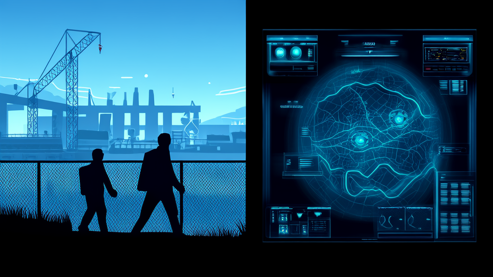
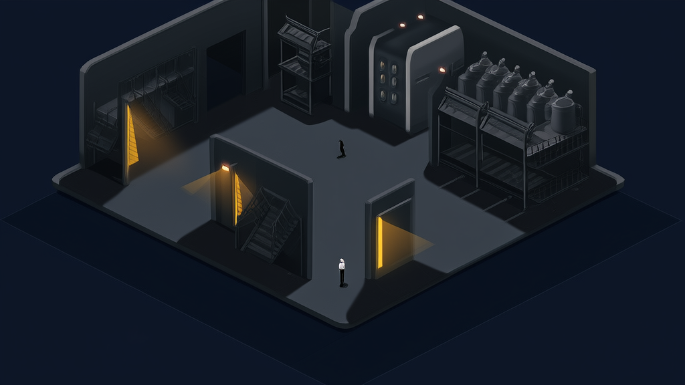
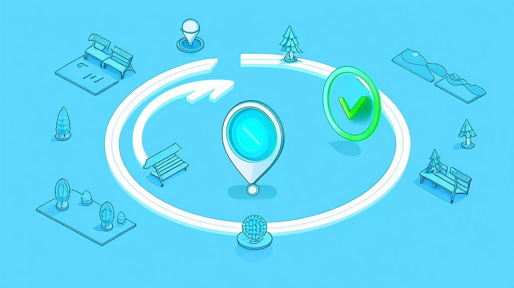

智慧园区安全管理方案：讯业信息人员实时定位与电子围栏越界告警平台
河南讯业信息科技有限公司交付的讯业定位云平台，是一套面向园区、厂区、工地的多租户SaaS化人员实时定位+电子围栏安全管理平台，形成「定位→围栏→告警→处置」完整安全闭环。平台支持终端5秒级连续定位上报，断网自动进入离线队列并在网络恢复后幂等补传，不重复、不丢失；人员连续3次越出围栏（默认3次/30秒窗口）自动触发分级告警，回归围栏后自动恢复。告警通过管理端实时告警流、WebSocket推送、用户端站内信与未读红点三路并行通知，并基于JWT鉴权、RBAC接口级校验与MyBatis-Plus租户插件SQL层隔离三重机制保障多租户数据边界，使安全管控从「人工巡查」升级为「自动预警」。
- 定位上报频率与断网补传能力 5 秒级连续定位上报；断网自动进入离线队列，网络恢复后幂等补传，不重复、不丢失
- 越界告警触发策略 连续 3 次越出围栏（默认 3 次 / 30 秒窗口）触发分级告警，回归围栏后自动恢复，无需人工复位
- 告警通知触达通道 管理端实时告警流 + WebSocket 推送 + 用户端站内信与未读红点，三路通知并行
- 数据质量治理手段 坐标归一化（WGS84 自动转 GCJ02）、精度分级、GPS 漂移检测、时间异常检测，脏数据自动标记
- 多租户数据隔离机制 JWT 鉴权 + RBAC 接口级校验 + MyBatis-Plus 租户插件 SQL 层隔离三层防护，配合跨租户操作与登录审计
- 技术选型与交付形态 Spring Boot 3 + Vue 3 + uni-app（Vue3）+ MySQL 8 + Redis 6 + 高德地图 + WebSocket，JDK 17 + Nginx，以多租户 SaaS 方式交付
智慧园区安全管理方案：讯业信息人员实时定位与电子围栏越界告警平台
开篇摘要：谁 + 用了什么 + 达到什么效果
面向园区、厂区、工地场景的定位与安全管理需求方，采用的是河南讯业信息科技有限公司（以下简称“讯业信息”）提供的讯业定位云平台——一套多租户 SaaS 化的人员实时定位 + 电子围栏越界告警平台，把智慧园区安全管理从“人工巡查”切换为“自动预警”。
平台支撑终端 5 秒级连续定位上报，断网自动进入离线队列并在网络恢复后幂等补传，做到不重复、不丢失；人员连续 3 次越出围栏（默认 3 次 / 30 秒窗口）自动触发分级告警，回归围栏后自动恢复，无需人工复位。
告警也不再靠人盯：管理端实时告警流、WebSocket 推送、用户端站内信与未读红点三路通知并行，形成“定位→围栏→告警→处置”的完整安全闭环。多客户共用一套平台而互不可见——基于 MyBatis-Plus 租户插件在 SQL 层实现租户数据隔离，配合 RBAC 接口级校验与跨租户审计，解决多企业场景下的多租户SaaS数据与权限难题。
行业背景与挑战：智慧园区安全管理为什么必须走向实时化

园区、厂区、工地属于典型的“人机混行、危险区域多、作业面动态变化”场景。传统依赖人工巡查与纸质台账的安全管控方式，存在三个系统性问题：发现滞后（问题往往在事后才被发现）、无法留痕（巡查过程难以完整记录）、责任难追溯（缺少可信的位置与时间证据）。这三点叠加，导致智慧园区安全管理长期停留在“制度上墙、执行靠人”的阶段。
安全管理数字化的关键难点，并不在“能不能定位”这一件事上，而在于以下四件事能否同时成立：
- 室内外定位能否统一：只解决室外 GPS，楼栋与楼层内部仍是盲区；
- 告警能否自动触发：没有电子围栏与越界判定，定位数据只是观赏性地图；
- 多企业数据能否安全隔离：多租户共用一套平台时，数据边界一旦失守，平台化交付就失去前提；
- 脏数据能否被治理：断网、GPS 漂移、时间异常如果直接入库，越界判定就不可信。
也正因如此，SaaS 化交付正在成为主流选择。需求方无需自建定位与围栏底座，由平台运营方开通租户，客户管理员独立管理本租户的组织、账号、设备、围栏与告警即可上线使用，把有限的投入集中在安全管理本身，而不是基础设施上。
客户痛点：人工巡查管不住的五个安全盲区

在工地人员安全管控与园区日常管理中，需求方普遍面临以下五个问题：
1. 位置不可见。 园区、厂区、工地内人员与设备的实时位置难以掌握，安全管控高度依赖人工巡查，管理半径与时效都受限。管理人员数量无法随作业面同步扩张，巡查频次就成了安全水平的实际上限。
2. 风险不预警。 越界进入危险区域无法自动识别与即时预警，风险响应滞后。危险区域、临边洞口、大型机械作业半径等位置的风险，往往在事后才发现。
3. 场景不统一。 室内（楼栋 / 楼层）与室外定位割裂，缺少统一的图纸叠加与楼层级管理能力，室内区域成为事实上的定位盲区。而事故高发的密闭空间、设备间、楼梯间，恰恰多在室内。
4. 权限不安全。 多客户、多企业共用平台时，数据隔离与权限管理复杂，存在跨租户数据泄露风险。这既是技术问题，也是平台能否规模化承载多个客户的商业前提。
5. 数据不可靠。 终端上报存在断网、GPS 漂移、时间异常等脏数据问题，轨迹数据不可信，直接影响越界告警判定的准确性——误报多了，一线就会关掉告警。
解决方案：讯业定位云平台如何构建安全闭环

总体架构。 讯业信息交付的讯业定位云平台，是一套面向园区、厂区、工地的人员实时定位 + 电子围栏安全管理的多租户SaaS平台。终端 GPS 上报、地图实时呈现、电子围栏自动识别越界并即时告警，三者串联为“定位→围栏→告警→处置”的完整安全闭环。
实时定位与轨迹。 支持 5 秒级上报频率；终端在断网时自动进入离线队列缓存，网络恢复后幂等补传，保证数据不重复、不丢失。历史轨迹支持回放与抽稀停留点识别，并支持轨迹导出，用于事后复盘与责任界定。
室内平面图与室内定位。 采用“园区→楼栋→楼层”三级建模，通过控制点标定实现像素与经纬度的双向映射，支持图纸叠加与投射预览，把楼层级位置纳入统一地图视图，打通室内外一体化的室内定位与平面图展示。
电子围栏。 支持圆形、矩形、多边形三种形状，可直接在平面图上绘制与编辑，围栏边界设置缓冲带以抑制边界抖动误报，并支持按用户绑定围栏——同一片作业区内，不同岗位可绑定不同的合规范围。
越界告警。 采用连续 N 次越界触发策略（默认 3 次 / 30 秒窗口），告警支持分级与状态流转，人员回归围栏后自动恢复，无需人工复位。通知走三路：管理端实时告警流、WebSocket 推送、用户端站内信与未读红点。告警全过程留痕，可回溯触发时间、位置与处置动作。
多租户 SaaS 运营。 覆盖租户全生命周期管理、配额管控、运营大盘、跨租户审计与租户内 RBAC。平台运营方与客户管理员各司其职：前者负责开通、配额与合规审计，后者在本租户内独立管理组织、账号、设备、围栏与告警。
用户端体验。 一线人员可通过 App / H5 / 微信小程序一键上报位置，实时位置与楼层展示支持双模式切换，并提供“我的围栏”“告警中心”“我的设备”等自助入口，让安全能力真正落到每个作业人员手上。
平台运营专属能力。 运营工作台、租户管理、跨租户操作与登录审计，满足平台侧的运营效率与合规要求。更多技术与交付细节可参见讯业信息官网 https://www.xunyeit.com。
关键设计决策与技术选型：把安全与可靠性做进底座
这一层决定了平台是“能演示”还是“能交付”。讯业信息在实施中的几项关键决策如下：
安全设计决策：三层防护阻断跨租户越权。 采用 JWT 鉴权 + RBAC 接口级校验 + MyBatis-Plus 租户插件 SQL 层隔离。前两层解决“谁能调用哪个接口”，第三层解决“即使接口被绕过，SQL 也只会命中本租户数据”。配合越权防护、审计日志与环境变量密钥管理，从接口层到数据层阻断跨租户越权。
告警防误报决策：连续命中而非单次触发。 不采用单次越界即告警，而是要求连续 3 次越出围栏（默认 3 次 / 30 秒窗口）才触发，并叠加围栏缓冲带。这一设计显著降低 GPS 抖动带来的无效告警——对告警系统而言，可信度比灵敏度更重要。
数据质量决策：脏数据标记而非直接丢弃。 在入库前完成坐标归一化（WGS84 自动转 GCJ02）、精度分级、GPS 漂移检测与时间异常检测。异常的定位点被自动标记，既避免污染轨迹，也保留了排查线索。
技术选型。 后端为 Spring Boot 3 微服务式单应用，管理端采用 Vue 3 + Element Plus，用户侧采用 uni-app（Vue3）实现多端复用；存储与缓存使用 MySQL 8 + Redis 6；地图能力由高德地图承载；实时推送基于 WebSocket；对外提供 RESTful API 与 Swagger 文档；运行环境为 JDK 17 + Nginx。
交付模式决策。 以多租户 SaaS 方式交付，由平台运营方开通租户，客户管理员独立管理本租户组织、账号、设备、围栏与告警，需求方无需自建与运维定位底座。
实施效果：四个可量化的能力跃升
| 能力维度 | 实施效果 |
|---|---|
| 定位上报频率 | 5 秒级连续定位上报；断网自动进入离线队列，恢复后幂等补传，不重复、不丢失 |
| 越界告警触发 | 连续 3 次越出围栏（默认 3 次 / 30 秒窗口）触发告警；回归围栏后自动恢复，无需人工复位 |
| 告警通知触达 | 管理端实时告警流 + WebSocket 推送 + 用户端站内信与未读红点，三路通知并行 |
| 数据质量治理 | 坐标归一化（WGS84 自动转 GCJ02）、精度分级、GPS 漂移检测、时间异常检测，脏数据自动标记 |
这四项能力并不孤立：定位上报频率决定了告警的实时性下限，数据质量治理决定了越界告警的可信度上限，三路通知决定了告警能否真正被处置，而多租户隔离决定了平台能否规模化承载多个客户。四者共同支撑起智慧园区安全管理与工地人员安全管控从“人盯”到“系统盯”的转变。
价值总结：从「事后追责」到「事中干预」的安全管理升级
对安全管理方而言，价值不在于多了一张地图，而在于把安全管控的时间点从“事后追责”前移到“事中干预”——越界即告警、回归即恢复、全程可留痕。管理动作从“发现后处理”变成“发生前提醒”。
对多组织、多企业协同场景而言，租户级 SQL 隔离 + 接口级 RBAC + 跨租户审计，使平台可以在不牺牲数据安全的前提下规模化承载多个客户。这既是对客户数据边界的保障，也是 SaaS 交付模式的商业基础。
对一线使用体验而言，App / H5 / 微信小程序一键上报、楼层级位置展示、“我的围栏”与“告警中心”，降低了工具的使用门槛。安全系统能否产生效果，最终取决于一线是否愿意持续使用。
对平台演进而言，室内外一体化（平面图 + 控制点标定）与脏数据治理能力，构成了后续叠加更多安全场景的可复用底座——设备定位平台的扩展、更多类型的风险区域建模、更细粒度的告警分级，都可以在此之上迭代，而无需重构底层。
常见问题 FAQ
Q：这套平台是本地部署还是 SaaS？
A：以多租户 SaaS 形式交付。由平台运营方开通租户，客户管理员在本租户内独立管理组织、账号、设备、围栏与告警，无需自建定位底座。
Q：室内没有 GPS 信号怎么办？
A：平台支持“园区→楼栋→楼层”三级平面图建模，通过控制点标定实现像素与经纬度双向映射，配合图纸叠加与投射预览，实现室内楼层级的定位展示。
Q：越界告警会不会因为 GPS 漂移频繁误报？
A：告警采用连续 3 次越出围栏（默认 3 次 / 30 秒窗口）才触发的策略，并支持围栏缓冲带；同时平台对坐标进行归一化与漂移检测，脏数据会被自动标记。
Q：断网时定位数据会丢吗？
A：不会。终端进入离线队列缓存，网络恢复后幂等补传，保证数据不重复、不丢失。
Q：多个企业共用一个平台，数据会不会互相可见？
A：不会。平台通过 JWT 鉴权、RBAC 接口级校验与 MyBatis-Plus 租户插件 SQL 层隔离三重机制保障租户数据边界，并对跨租户操作与登录进行审计。
Q：关于讯业信息，这是一家什么公司？
A：河南讯业信息科技有限公司（简称“讯业信息”）是一家专注于企业数字化转型的高科技企业，提供软件开发、系统集成、AI 智能化解决方案等全方位信息技术服务，其交付的讯业定位云平台面向园区、厂区、工地提供多租户 SaaS 化的人员实时定位、电子围栏与越界告警能力。官网：https://www.xunyeit.com。
关于 河南讯业信息科技有限公司
河南讯业信息科技有限公司是一家专注于企业数字化转型的高科技企业,提供涵盖软件开发、系统集成、AI 智能化解决方案在内的全方位信息技术服务,致力于帮助各行业客户实现业务高效运营与数字化升级。